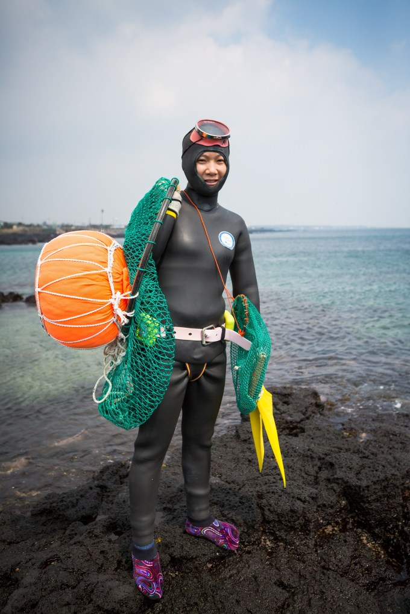
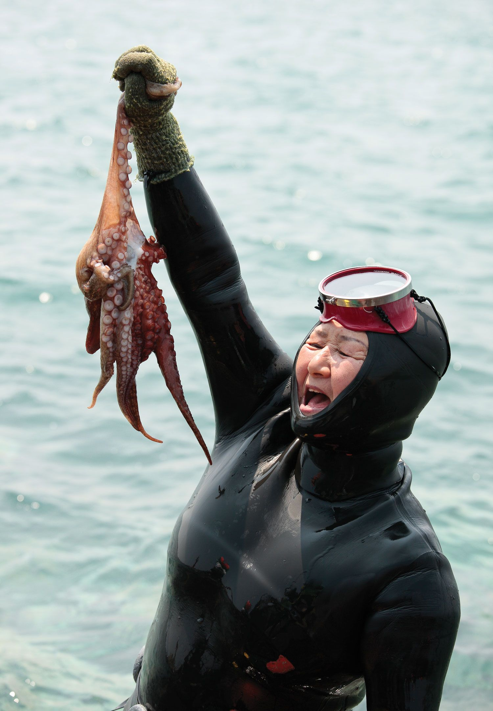
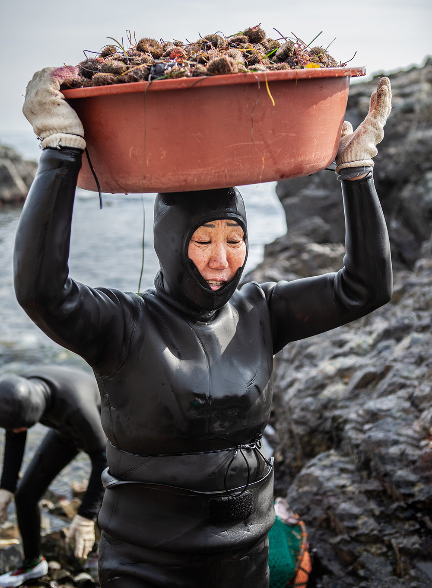
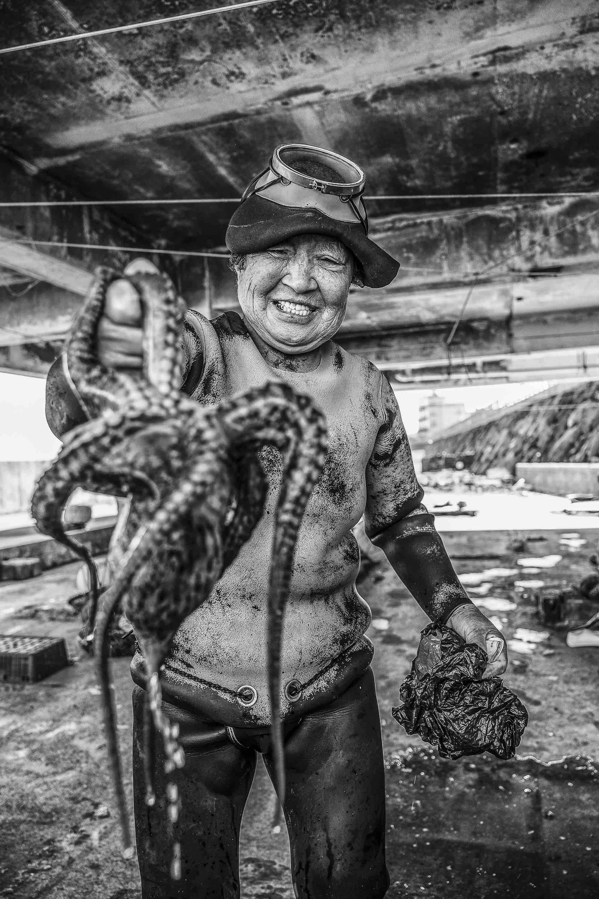
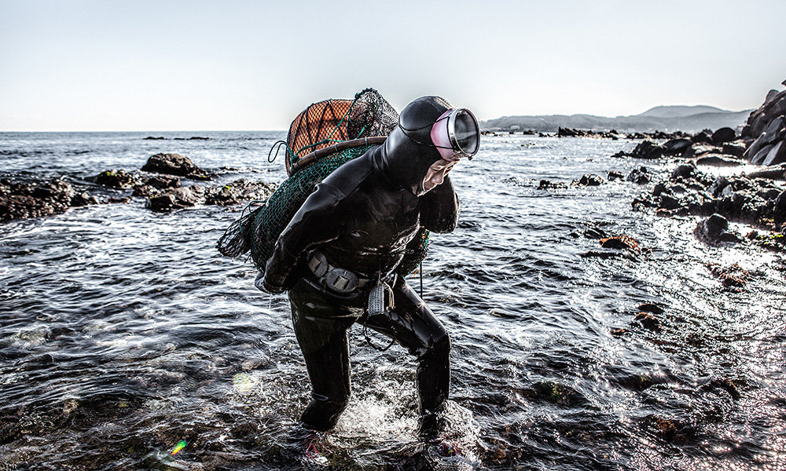
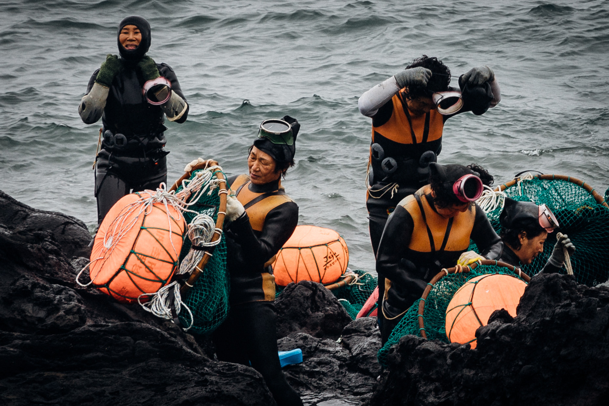

"At that moment, I understood something about why it is so difficult for Koreans to give up on the haenyeo.
They fear losing the human element, a persistent and vexing connection between labor and their love for a story that sticks as persistently and stubbornly in their minds as the abalone itself.
The desire to preserve haenyeo has more to do with longing for the past than planning for the future. Even if the work is not always as beautiful as it is sometimes made out to be, imagining a future without it is simply impossible."